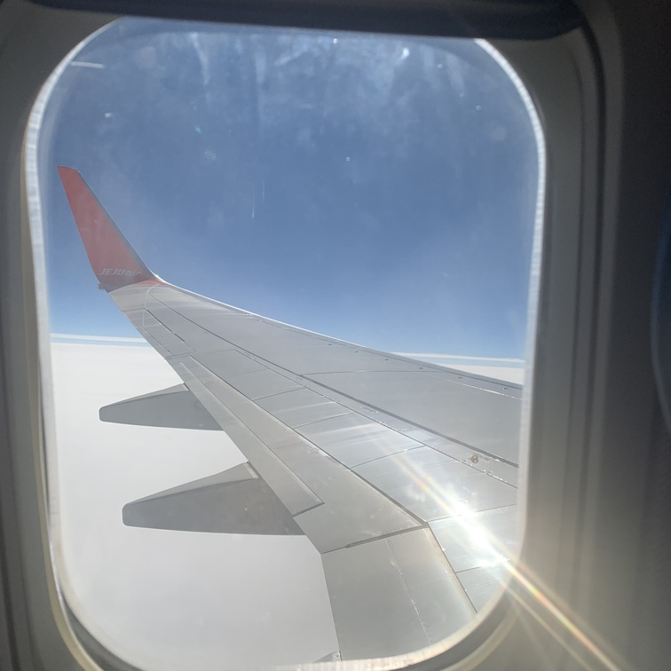
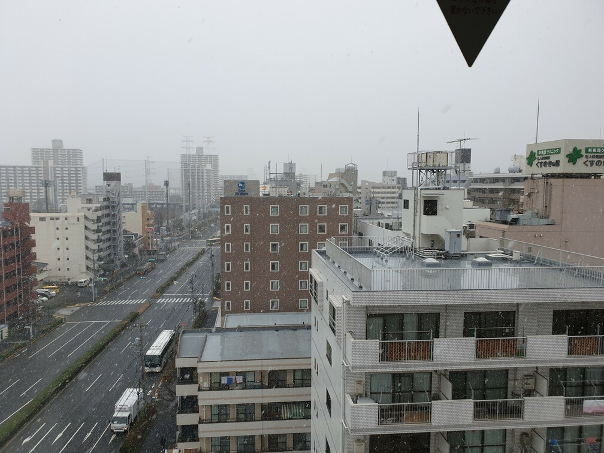
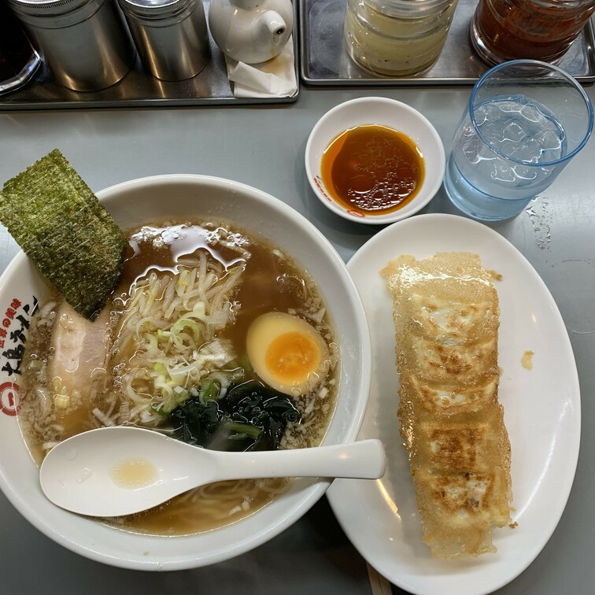
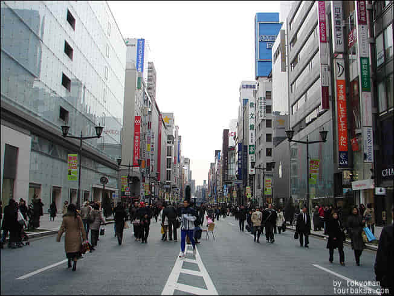

여행 첫째 날


일본 나리타 공항에 도착하여 곧장 도쿄역으로 갈 수 있는 1000엔 버스를 끊고 설레임과 함께 출발 했다.
처음가본 도쿄역은 매우 사람이 많고 복잡하였다. 도쿄역 건물은 절반으로 나뉘어 한쪽은 마치 서울역처럼 옛날 건물을 구현해놓은것 같았고 반대편은 현대의 모습의 건물 모양이였다.
도쿄역에서 점심을 먹고 짐이 많고 피곤했기 때문에 조금만 둘러본뒤 바로 숙소로 향했다.
일본의 지하철은 우리나라와는 달리 매우 복잡하였다. 지하철을 서로다른 민간기업들이 운영하기 때문에 혼란스러웠고 교통카드를 발급 받는것 부터 쉽지 않았다.
겨우겨우 티켓을 끊고 지하철에 몸을 실었다. 지하철은 7~8년정도전 우리나라 지하철 같았다. 우리는 익숙한 스크린도어도 없었고 지하철 천장도 내부 파이프(?)가 다보였고 공사가 덜된듯한 느낌이었다.
숙소는 도쿄역에서 30분 가량 떨어진 니시카사이역 근처에 있었는데
시끄러운 도쿄역과 달리 사람들이 적은것은 아니었지만 조용한 분위기에 우리는 와본듯한 편한함을 느꼈다.
숙소에 들어가기전에 편의점에 들러 먹을거리를 구매하였다. 한국 편의점과 다른점은 간편하게 먹을 수 있는 음식들의 종류가 매우 다양하였고 맛도 있어 보였다.
3시쯤 숙소에 체크인을 하고 짐을 푼뒤
대충 끼니를 때우고 전날에 한숨도 못잔 우리들은 잠깐 휴식을 취했다.
아니 푹 잤다.
저녁에 일어나 카츠야라는 일본 돈까스 체인점에서 밥을 먹었다.
큰 기대는 없었는데 매우 맛있었다. 돈까스 두께부터 남달랐고
추가 구매한 국도 신기한 맛이었다. 친구가 시킨 가츠동도 익숙하지만 퀄리티가 좋았다.
내일을 위해 우리는 일찍 들어가서 잠에 들었다.
여행 둘째 날 (오다이바)

아침에 일어나니 눈이 오고있었다. 경치는 참 좋았지만 오늘 돌아다니녀야하기에 걱정됬지만 나갈때쯤은 다행이 그쳤다.
오늘은 숙소에서 가까운 오다이바를 가기로 하였다. 지하철을 타고 갔는데 맨 앞애 탑승했는데 무인 전철이여서 기관사가 운전하는 곳이 없고 창문이 넓게 있어서 전차가 앞으로 가는 모습과 경치를 한눈에 볼 수 있어서 신기하였다.
오다이바는 마치 한강에 온것처럼 넓은 강이 펼쳐져있어 경치가 매우 좋았고 배를 타고 관람도 할 수 있는듯 했다. 여러곳에서 아기자기한 기념품을 판매하고 있었다.
오다이바는 볼거리가 매우 많았다. 뉴욕에만 있는줄 알았던 자유의 여신상이 있었는데 조금 크기가 작긴해도 매우 정교하게 만들어 진것 같았다.
자유의 여신상에서 좀더 가면 후지테레비가 나오는데 우리는 사진만 조금 찍고 지나치고 바로 관람차가 있는곳으로 갔다.
관람차는 매우 크고 웅장 하였다. 멀리서 볼때와는 다르게 가까이 올수록 점점 커지고 고소공포증이 살짝 있는 나는 불안할 정도로 엄청 거대하였다.
탑승하는곳이 매우 다양한 색으로 되어있는데 그중에 몇개는 바닥이 보이는 투명한 통유리로 된것도 있었다.
우리는 바닥이 있는것으로 탔다...
그 후 우리는 긴자로 이동하였다.
여행 둘쨰 날 (긴자)


배고픈 우리는 긴자에 도착하자마자 음식점을 찾았다. 맛집을 찾기에는 매우 배가 고픈 상태여서 일본어를 읽을 줄도 모르기에 감을 믿고 약간 허름해 보이는 라멘집에 들어갔다.
점심시간이 지나서 그런지 가게에는 손님이 아무도 없었고 만화에서보던 쭉 일자로 되어 주방장과 마주보는 테이블에 앉아 세트메뉴를 골랐고
소유 라멘과 교자만두가 나왔는데 공복이였던 우리는 맛있게 먹었다. (사실 살짝 짰다.)
긴자는 쇼핑거리로 다양한 명품가게들이 쭉 나열해있었다. 여행자금이 적은 우리와는 사실 맞진 않았다. 그래도 긴자는 주말에 평소 도로인 곳을 통제하여 보행자들이 편하게 다닐 수 있게 해서 사람이 매우 많았지만 혼잡하지는 않았다.